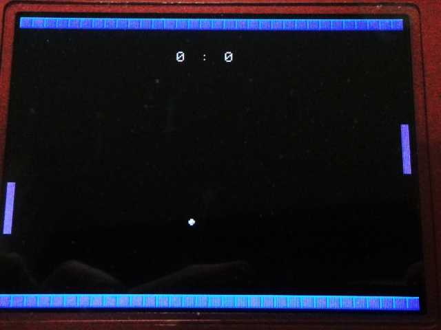
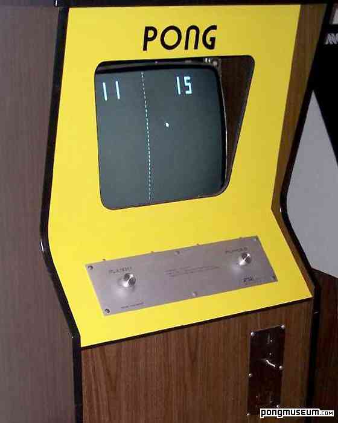
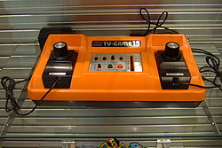
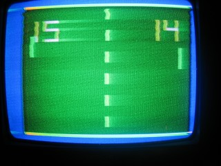
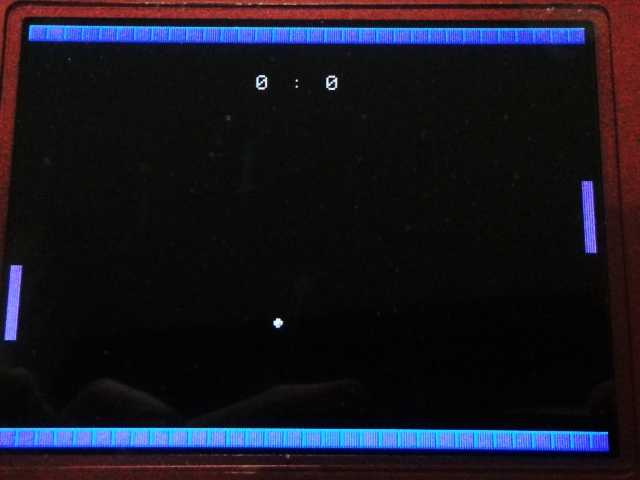
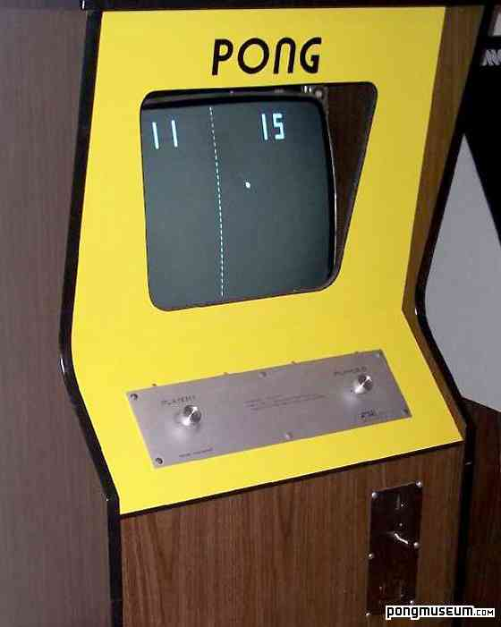
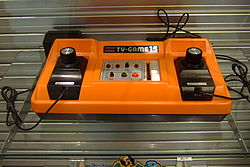
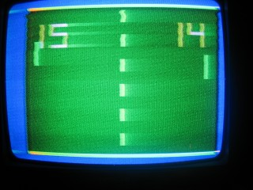

プチコン作品
ぷちぷち３級による、ニコニコ動画アップ作品や、１画面プログラムなど
世界最古のビデオゲーム(Tennis for two 1958)
オリジナル版(1958年)
プチコン版
※２ 対戦ゲームというものは、相手が人間であるため、いつやっても面白く、放物線の動きというものはそれだけで、十分に面白いゲームになりえる(最近、スマートフォンと共に世界的に大ヒットした「AngryBirds」の核となる動作は放物線軌道である。)
プチコン版
世界最古のビデオゲーム(※１)を、プチコン上で再現してみました。
1958年10月にアメリカの物理学者、ウィリアム・ヒギンボーサムによって開発された最初期のコンピュータゲームとされるもののひとつである。(Wikipedia抜粋)
もともとミサイルの弾道計算の技術の応用であり、放物線を描くボールを２人でコントローラを使用して、撃ちあうものです。
オリジナルのものは、テニス盤だけで、得点計算などはありませんが、スペースインベーダーが登場する10年以上も前に、今プレイしても面白いと思えるものの原型ができていたわけです。(※２)
オリジナルのゲームでは、ツマミで打つ角度を調整し、ボタンで打ち返すと思われます。
プレイヤーの位置という概念がなく、ボールの高さが合えば、どんな場所からでも打ち返すことができるのが特徴です。
プチコン版は、ボタンの上下で角度を調整し、横ボタンで打ち返します。(1P側の操作)
またゲーム性を高めるため、ラリーの回数に応じて、玉の速さが速くなっていきます。
プチコン版は、本体１台で２人対戦はもちろん、コンピュータとも対戦できます。
テニスというよりピンポンに近いです。
※２ 対戦ゲームというものは、相手が人間であるため、いつやっても面白く、放物線の動きというものはそれだけで、十分に面白いゲームになりえる(最近、スマートフォンと共に世界的に大ヒットした「AngryBirds」の核となる動作は放物線軌道である。)
操作方法
↑↓
角度調整(1P)
→
ショット(1P)
ＸＢ
角度調整(2P)
Ｙ
ショット(2P)
世界最古のテレビゲーム(PONG)
コンピュータゲームの歴史を語る上で外すことができない、ＰＯＮＧ(1972年)をプチコンで再現してみました。
任天堂もファミコンを作る前に「カラーテレビゲーム15」(1977年)というゲームハードで同様なゲームを作っていました。
コンピュータゲームの元祖といえる作品でゲーム自体は非常に単純ですが、当時はボタンではなくダイヤルで操作していたため、瞬時に狙った場所にパドルを移動させることが出来ました。
現在のようなボタンやスティックではこのような俊敏な動きはできません。
また、任天堂のテレビゲーム15では、パドルのサイズを変えたりできるモードなどがありました。
任天堂はこの頃からすでに独立したコントローラを実装しています。
プチコン版でも、パドルのサイズを変更して、ハンデ戦が楽しめます。
プチコン版でもＤＳのタッチパネルならタッチした場所に瞬時に移動できますが、2人対戦を考えると実用的ではないためゲーム本来の楽しさを表現することはできませんでした。
「任天堂もクラシックコントローラではなく、ダイヤル方式でボタンがついたレトロコントローラを出せば良いのにな」と思います。
冗談抜きで(笑)
ダイヤル操作では現在のボタンやスティック方式のゲームでは味わえない楽しさが絶対にあります。
今でも、大御所声優であり、ゲーム好きである「大山のぶ代」さんがダイアル方式のアルカノイド(アーケードのブロックくずしゲーム：タイトー)をやり込んでいるとのことですから…
まだ2P対戦専用ですが、そのうちCOM対戦も実装しようと考えています。
プチコン版

PONGのアーケード筐体(Atari:1972)

カラーテレビゲーム15(任天堂:1977)


任天堂もファミコンを作る前に「カラーテレビゲーム15」(1977年)というゲームハードで同様なゲームを作っていました。
コンピュータゲームの元祖といえる作品でゲーム自体は非常に単純ですが、当時はボタンではなくダイヤルで操作していたため、瞬時に狙った場所にパドルを移動させることが出来ました。
現在のようなボタンやスティックではこのような俊敏な動きはできません。
また、任天堂のテレビゲーム15では、パドルのサイズを変えたりできるモードなどがありました。
任天堂はこの頃からすでに独立したコントローラを実装しています。
プチコン版でも、パドルのサイズを変更して、ハンデ戦が楽しめます。
プチコン版でもＤＳのタッチパネルならタッチした場所に瞬時に移動できますが、2人対戦を考えると実用的ではないためゲーム本来の楽しさを表現することはできませんでした。
「任天堂もクラシックコントローラではなく、ダイヤル方式でボタンがついたレトロコントローラを出せば良いのにな」と思います。
冗談抜きで(笑)
ダイヤル操作では現在のボタンやスティック方式のゲームでは味わえない楽しさが絶対にあります。
今でも、大御所声優であり、ゲーム好きである「大山のぶ代」さんがダイアル方式のアルカノイド(アーケードのブロックくずしゲーム：タイトー)をやり込んでいるとのことですから…
まだ2P対戦専用ですが、そのうちCOM対戦も実装しようと考えています。
プチコン版

PONGのアーケード筐体(Atari:1972)

カラーテレビゲーム15(任天堂:1977)


操作方法
↑↓
パドル移動(1P)
ＸＢ
パドル移動(2P)
世界初のシューティングゲーム（SpaceWar)をプチコンで再現してみた
1962年に作られた、世界初のシューティングゲームである宇宙戦争のゲームをプチコンで再現してみようと思いました。
オリジナル版はようつべのは動画でしか見たことがないので、詳しい仕様はわかりませんが、多分こんな感じのゲームだと思います。
２人対戦専用のゲームで、太陽を中心にプレイヤーの自機が公転していて、左右ボタンで向きを変え、上ボタンで加速、Lボタンで攻撃ができます。
自機が進む方向は太陽の重力の影響を受けます。
燃料がある場合は、重力に逆らった動きができますが、燃料が少なくなると、重力に逆らった動きはできません。
攻撃は重力の影響を受けずに直進します。(オリジナル版も直進している)
一応、弾は3発まで画面に表示、加速と射撃によってエネルギーが減少。
オリジナル版の詳しい映像資料がないため、ほとんど推測で作っています。
40年前のゲームでもすでにゲームの面白さが表現されています。
現在では、このようなゲームが以外に多くありませんが、作り込みリメイク次第で現在でも通用する面白さがあると思います。
プチコン版
オリジナル版
見れない場合はこちら
オリジナル版はようつべのは動画でしか見たことがないので、詳しい仕様はわかりませんが、多分こんな感じのゲームだと思います。
２人対戦専用のゲームで、太陽を中心にプレイヤーの自機が公転していて、左右ボタンで向きを変え、上ボタンで加速、Lボタンで攻撃ができます。
自機が進む方向は太陽の重力の影響を受けます。
燃料がある場合は、重力に逆らった動きができますが、燃料が少なくなると、重力に逆らった動きはできません。
攻撃は重力の影響を受けずに直進します。(オリジナル版も直進している)
一応、弾は3発まで画面に表示、加速と射撃によってエネルギーが減少。
オリジナル版の詳しい映像資料がないため、ほとんど推測で作っています。
40年前のゲームでもすでにゲームの面白さが表現されています。
現在では、このようなゲームが以外に多くありませんが、作り込みリメイク次第で現在でも通用する面白さがあると思います。
プチコン版
オリジナル版
見れない場合はこちら

蘇るBASICプログラミング プチコン公式活用テクニック
懐かしの'80年代…。マイコン雑誌に載ったプログラムリストを手打ちした、あの懐かしの時代が任天堂の携帯ゲーム機で蘇ります！
まずはサンプルプログラムで遊んでみるのもよし、オリジナルゲームをプログラミングするのもよし！
BASICは、プログラミングの原点です。プチコン唯一の公式書籍